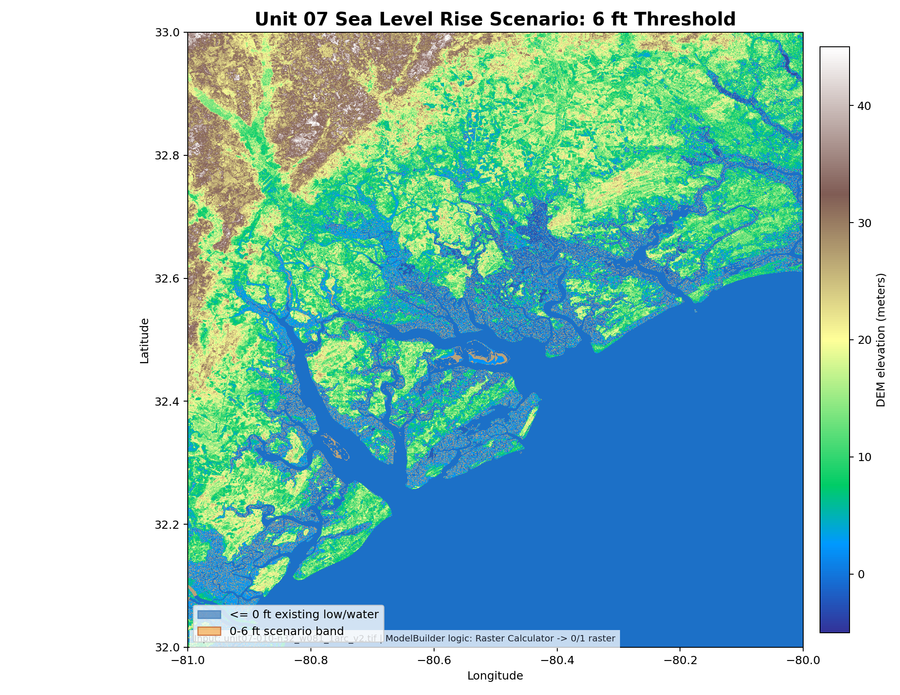
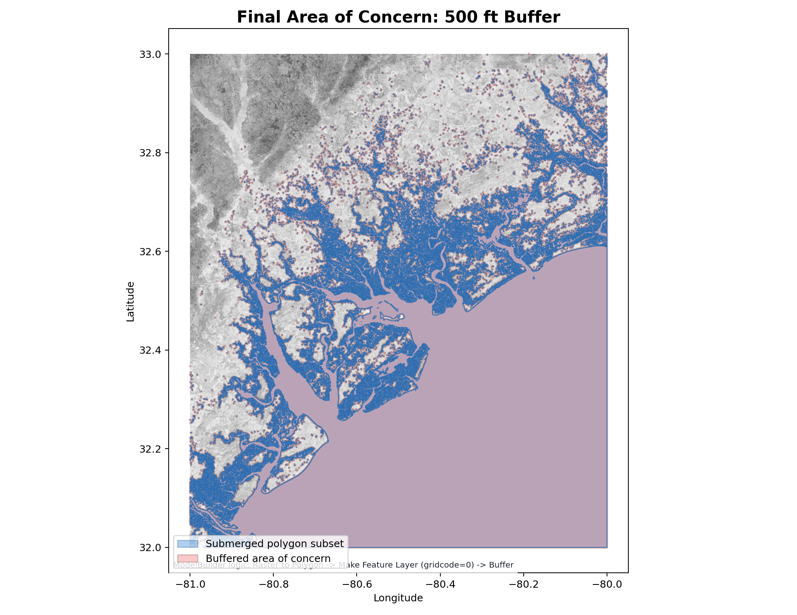
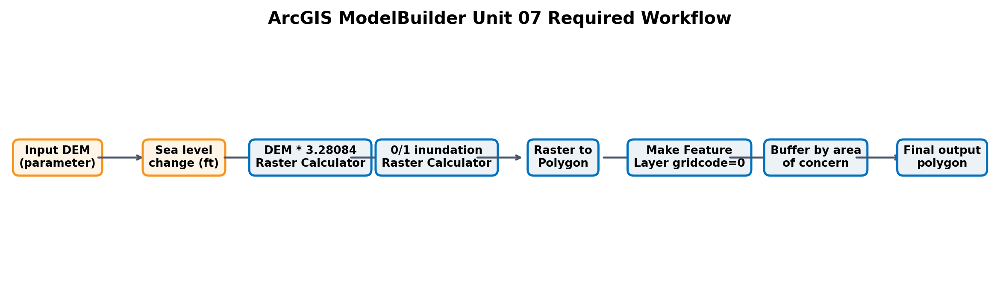

Unit 07: ModelBuilder 해수면 상승 도구
ModelBuilder tool 제작 매뉴얼
ArcGIS 방식의 핵심은 지도를 한 번 만드는 것이 아니라, 다른 DEM과 다른 sea-level 값을 넣어도 다시 실행되는 tool을 만드는 것입니다.
도구 상자 안의 각 도구를 선으로 연결하면 하나의 작은 프로그램이 됩니다. 이번 과제에서는 Raster Calculator부터 Buffer까지를 하나의 실행 흐름으로 묶습니다.
input raster, sea level change, buffer radius, output path가 tool dialog에 보여야 합니다. 숨겨진 model variable이면 채점 기준의 parameter 점수를 잃습니다.
PDF에는 예쁜 설명보다 model canvas, tool interface, parameter defaults, output layer가 실제로 보이는 스크린샷이 중요합니다.
| Toolbox name | Unit07_SeaLevel_ModelBuilder.atbx |
|---|---|
| Model name | SeaLevelRiseScenarioTool |
| 저장 위치 | ArcGIS Pro project folder 내부 |
| Input Raster | Data Type: Raster Dataset, Required, elevation in meters |
|---|---|
| Sea Level Change | Data Type: Long Integer, Default: 6, Unit: feet |
| Area of Concern Radius | Data Type: Long Integer 또는 Linear Unit, Default: 500 feet |
| Output Polygon | Data Type: Feature Class, Direction: Output |
| Input | Input Raster parameter |
|---|---|
| Expression | `%Input Raster% * 3.28084` |
| Output raster | dem_feet |
| Expression | `Con("dem_feet" <= %Sea Level Change%, 0, 1)` |
|---|---|
| 0 | new sea level below areas, likely inundated |
| 1 | not likely inundated |
| Output raster | inundation_01_raster |
| Raster to Polygon input | inundation_01_raster |
|---|---|
| Field | Value 또는 gridcode |
| Make Feature Layer SQL | `gridcode = 0` |
| Layer name | submerged_polygon_layer |
| Input Features | submerged_polygon_layer |
|---|---|
| Distance | `%Area of Concern Radius% Feet` |
| Dissolve Type | ALL 권장 |
| Output Feature Class | Output Polygon parameter |
| 테스트 입력 | unit07-010-n32_w081_1arc_v2.tif |
|---|---|
| Default test | Sea Level Change = 6 ft, Area Radius = 500 ft |
| PDF screenshot 1 | 전체 ModelBuilder canvas |
| PDF screenshot 2 | tool dialog에 네 parameter가 보이는 화면 |
| PDF screenshot 3 | final output polygon layer가 지도 위에 나타난 화면 |
ModelBuilder 내부 로직 검증 파이프라인
Python은 ArcGIS 제출물을 대신하지 않습니다. 대신 같은 DEM과 같은 기본값으로 ModelBuilder가 어떤 계산을 하는지 눈에 보이는 PDF/지도/CSV로 검증합니다.
13백만 개 가까운 DEM cell을 열고, 각 cell의 meter 값을 feet로 바꿉니다. 이 단계가 첫 번째 Raster Calculator와 같습니다.
6 ft 기준보다 낮은 칸은 침수 후보로 표시합니다. 컴퓨터 입장에서는 파란 스티커와 빈 스티커를 전부 붙이는 일입니다.
Raster to Polygon처럼 인접한 침수 cell들을 하나의 색칠 구역으로 묶고, 그 주변에 500 ft 안전띠를 둘러 final area of concern을 만듭니다.
제공 DEM을 실제로 읽어 ModelBuilder 필수 처리 순서를 재현했습니다. PDF에는 requirement checklist, workflow diagram, default scenario summary, sea-level map, area-of-concern map이 포함됩니다.

Sea Level Scenario Map

Area of Concern Map

ModelBuilder Workflow Diagram